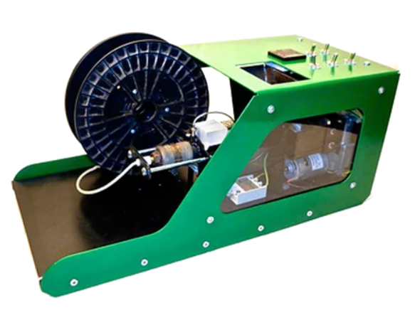
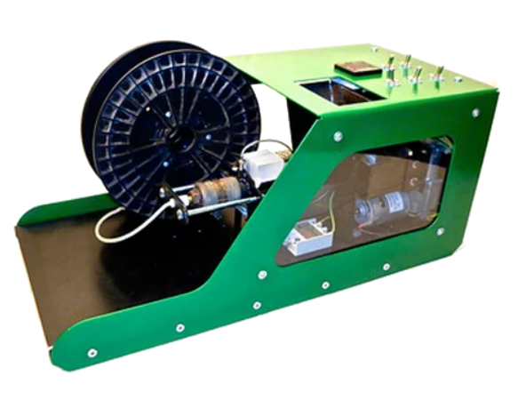

Las Impresoras 3D
¿Qué es una impresora 3D?
Una impresora 3D es una máquina capaz de realizar réplicas de diseños en 3D, creando piezas o maquetas volumétricas a partir de un diseño hecho por ordenador.

Historia de las Impresoras 3D
1980s
1981-82: Hideo Kodama fue la primera persona con un prototipo que usaba fotopolímeros para construir un objeto sólido e 'impreso' por capas. Lamentablemente su solicitud nunca se aprobó ya que no pudo cumplir el plazo de un año por problemas de financiación.
1984: La patente es asignada a Chuck Hull, que en ese momento trabajaba para 3D Systems Corporation e inventó la estéreo-litografía. En 1987 se lanzó la primera impresora 3D al mercado, la SLA-1.


Historia de las Impresoras 3D
1990s
Los procesos de FA (Fabricación Aditiva) generalmente tenían sus propios nombres. Todo el trabajo de los metales se realizaba mediante procesos que ahora se denominan no aditivos (fundición, estampado y mecanizado).
La FA se asoció en la metalurgia solo con procesos que eliminaban el metal (en lugar de agregarlo), como fresado o CNC. Se desarrollaron nuevas ténicas: microfusión y los materiales rociados. Lo que permitió crear nuevas geometrías.
El año 1993, una empresa de impresoras 3D de inyección de tinta llamada Solidscape, introdujo un sistema de fabricación de chorro de polímero de alta precisión con estructuras de soporte solubles (clasificadas como una técnica de "punto sobre punto").
En 1995, la Fraunhofer Society desarrolló el proceso de fusión por láser selectivo .
En 1999, se expandió por primera vez una vejiga humana usando células del propio paciente.
Historia de las Impresoras 3D
2010s
En 2009 expiró la patente del FDM (Modelaje por Deposición Fundida).
En la decada de 2010 se extendió el uso de la FA en otros sectores a parte de la metalurgia. En ésta, empezaron a fabricarse totalmente piezas finales.
En la industria de la aeronáutica vieron un gran filón en la tecnología, y se usó para reducir costes y peso de los materiales utilizados hasta la fecha. El motor LEAP GE se fabricó con una boquilla de combustible impresa en 3D que reducía las piezas anteriores de 20 a 1, reduciendo un 25% tanto el peso como el tiempo de ensamblaje.
En 2012, Filabot desarrolló un sistema a cualquier impresora 3D (FDM) usar una gama más amplia de materiales plásticos.
El precio bajó en torno a los 2000 € y FDM era el método más popular (46%), por su asequibilidad.
 


Historia de las Impresoras 3D
2020s
En la década de 2020, las impresoras 3D han alcanzado un nivel de calidad y precio asequible para la mayoría de personas. Pueden encontrarse muchas decentes por menos de 200 €. Aunque la mayoría son por FDM, hay modelos de estéreo-litográficos a precios similares.
En Noviembre de 2021, un paciente británico recibió la primera prótesis ocular del mundo totalmente impresa en 3D.
Usos de las Impresoras 3D
Medicina
Uno de los campos más avanzados. En agosto de 2015 surge el primer medicamento impreso en 3D. Permite fabricar dosis adaptadas al paciente.
Prótesis 3D
Un estudiante de Colorado, creó una prótesis robótica con impresión 3D. El brazo tiene un coste de 500 dólares, (160 veces menos que los tradicionales). Además es controlado por ondas cerebrales y tiene un diseño robusto y avanzado (pueden encontrarse de manera gratuita en internet).
Transplantes
Existe un material similar al tejido humano, compuesto por miles de gotas de agua conectadas y encapsuladas en películas lípídicas que interactuan con el resto de tejidos. Solo se han realizado transplantes óseos, los órganos de tejido blando están aún por alcanzarse. Siendo el corazón y el riñón los principales objetivos.


Usos de las Impresoras 3D
Medicina
Embarazo
Gracias a las ecografías en 3D, en 2013 fueron más allá: la impresión en tres dimensiones del feto. Ayudan al médico a examinar mejor al feto. Los padres con ceguera, pueden palpar cómo será su hijo. Muchos padres se están interesando en disponer de este objeto, como recuerdo material de la gestación de su hijo.
Fracturas
Para inmovilizar un miembro por fractura. Se suele usar escayola, (20 horas en secarse), pudiendo causar rozaduras en algunos casos. Cortex Exoskeleton ha creado piezas 3D a medida perfecta de cada paciente. Esta pieza es mucho más resistente y ligera que una escayola; además permiten la transpiración, impidiendo así que salgan hongos.

Usos de las Impresoras 3D
Moda
Nike fabricó por impresión 3D el calzado de fútbol Vapor Laser Talon 2012 para jugadores de fútbol americano, y cada vez son más empresas quienes usan esta técnica para el calzado completo o la suela.
Hay empresas que imprimen gafas con ajuste y estilo personalizados bajo demanda (sin lentes).

SVG Solves the Most Important Problems in Modern Web Development

1. Scalability
SVG is like an infinity scalable canvas
Because of its vector nature a SVG drawing can scale and adapt to any size without loosing sharpness. In contrast, raster-based formats, such as GIF, JPG, and PNG, are static and have fixed dimensions. Although retina screen and other techniques for responsive images are good they still can not compete with the SVG's ability to scale infinitely. No matter what device you use SVG will adapt and scale perfectly preserving the graphic's visual appearance intact.

2. Interactivity
SVG Drawings are dynamic and interactive
SVG is fully scriptable. It can be manipulated with CSS and/or JavaScript. A SVG graphic can be animated and can respond to any user actions.

3. Performance
SVG is preferred image format for high traffic sites
Because SVG is just a plain text in most of the cases the file size will be smaller compared to its bitmap counterparts (JPEG and PNG). So the impact on the web page performance will be minimized.
SVG Has Very Good Browser Support
The browser support for SVG is 97% and above

SVG Has Many Different Use Cases


SVG Workflow Is Straightforward
-
01. Draw
Draw a graphic in vector editing program such as Adobe Illustrator
-
02. Export
Export the drawing as a SVG file
-
03. Optimize
Further optimize the exported SVG with tool such as SVGO (if needed)
-
04. Use
Use the final SVG file on a website